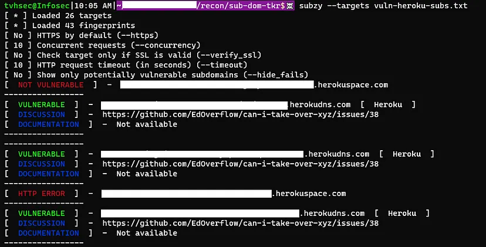
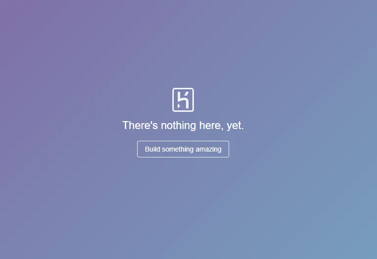

Massive Subdomains Take Over using subzy.
Hello everyone,
I hope you are all doing well amidst the ongoing pandemic. Today, I would like to share an interesting discovery I made recently.
As part of my efforts in responsible disclosure, I often assist companies that cannot afford professional penetration testing services. In this writeup, I will discuss a recent incident I encountered.
Let's begin with the responsible disclosure program, focusing on the target company "abc.com". To initiate my reconnaissance process, I conducted an extensive investigation. It was fascinating to find that the target had over 2000 subdomains, which indicated a significant challenge ahead.
To start my subdomain reconnaissance, I employed the "dnsx" tool by projectdiscovery to gather CNAME records for all subdomains. To my surprise, I discovered that more than 20 subdomains were utilizing Heroku cloud services.
To proceed with the subdomain takeover, I referred to an informative article titled Subdomain Takeover: Identifying Providers. To expedite the process, I used the "grep" command to filter the results and extract the subdomains associated with Heroku.
Below are the dnsx results:
To filter the results and extract the Heroku subdomains, I utilized a bash command:
cat vuln-subs.txt | awk ‘{print $2}’
The command successfully extracted the relevant subdomains:

Next, I needed to remove the opening and closing brackets at the start and end of each line. The following command accomplished this:
cat vuln-subs.txt | awk ‘{print $2}’ | awk ‘{print substr($0,2,length()-2);}’
The result was a clean list of subdomains:
With this information at hand, I was ready to automate the process. Using subzy, I ran all the subdomains for further analysis.

It is important to note that not all subdomains were vulnerable to takeover. Only those subdomains without any deployed applications were susceptible.

To confirm if any apps were deployed on the potentially vulnerable subdomains, I used the curl command to check their response:
for i in `cat vuln-heroku-subs.txt`; do echo $i; curl — head $i; done;
Based on my reconnaissance, subdomains with a 404 response were deemed vulnerable to takeover. I cross-verified these results with the output from subzy to arrive at this conclusion.
To conclude, I promptly created a comprehensive proof of concept and reported the findings to the respective company.
Thank you for reading.
For more updates and insights, follow me on Twitter: @thevillagehacker.